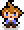

WORLD FLIPPER
{{ heroSubtitle }}
{{ unitsScreenTitle }}
{{ unitsStatusText }}

{{ rosterErrorTitle }}
{{ rosterError }}
{{ rosterErrorHint }}
{{ c.displayName }}
{{ filterNoMatchText }}
{{ filterCount }}
{{ filterTitleText }}
{{ filterNameTitle }}
{{ filterRarityTitle }}
{{ filterElementTitle }}
{{ filterGenderTitle }}
{{ ch.label }}
{{ filterRaceTitle }}
{{ filterCancelText }}
{{ filterOkText }}
{{ newsTitleText }}
{{ row.text }}
{{ row.text }}
{{ dialogCloseText }}
{{ aboutTitleText }}
{{ aboutIntroText }}
{{ aboutCreditsTitleText }}
{{ creditClaudeText }}
{{ creditSourcesText }}
{{ creditWikiText }}
wiki.biligame.com/worldflipper
{{ creditMiaoText }}
worldflipper.miaowm5.com
{{ creditWikiGgText }}
worldflipper.wiki.gg
{{ creditCommunityText }}
docs.google.com
{{ creditEliyaText }}
eliya-bot.herokuapp.com
{{ creditNamuText }}
en.namu.wiki
{{ creditOfficialText }}
{{ officialSiteText }}
worldflipper.jp
{{ officialTwitterText }}
x.com/world_flipper
{{ officialDemoText }}
worldflipper.jp/demo
{{ officialBiliText }}
space.bilibili.com/1365027097
{{ dialogCloseText }}
{{ flipScreenTitle }}
♥ {{ flipLikeCount }}
✕ {{ flipDislikeCount }}
↓ {{ flipSkipCount }}
{{ flipDoneText }}
♥
✕
↓
{{ flipCardName }}
{{ flipCardVariantLabel }}
{{ flipProgressText }}
{{ flipHintText }}
{{ flipTapHintText }}
{{ artToggleLabel }}
♥ {{ detailArtLikeCount }}
✕ {{ detailArtDislikeCount }}
↓ {{ detailArtSkipCount }}
{{ detailEnName }}
{{ detailEnTitle }}
{{ detailJpName }}
{{ emotionsTitleLabel }}
{{ emotionName }}
{{ emotionCounter }}
{{ emotionOverlaysTitleLabel }}
{{ wikiSectionInfoLabel }}
{{ row.label }}
{{ row.value }}
{{ wikiSectionSkillsLabel }}
{{ sg.caption }}
{{ se.name }}
{{ se.text }}
{{ wikiSectionStoryLabel }}
{{ wikiStoryIntro }}
{{ ib }}
{{ st.title }}
{{ st.text }}
{{ wikiSectionReviewLabel }}
{{ wikiReview }}
{{ wikiSource }}
{{ miaowm5SourceLabel }}
{{ wikiEnSourceText }}
{{ wikiSectionVoiceLabel }}
{{ vt.icon }}
{{ vt.context }}
{{ vt.text }}
{{ vt.textJp }}
{{ wikiSectionQuotesLabel }}
{{ vq.type }}
{{ vq.text }}
{{ wikiNoVoiceText }}
{{ storyEmptyText }}
{{ storyListTitleLabel }}
{{ sl.title }}
{{ sl.desc }}
{{ videosTitleLabel }}
▶
{{ cv.label }}
{{ videoRawLabel }}
{{ videoSourceCommunityText }}
{{ storyDetailTitle }}
{{ sd.speaker }}
{{ sd.text }}
{{ relatedCharsTitleLabel }}
?
{{ rc.name }}
{{ relatedKeywordsTitleLabel }}
{{ rk.title }}
{{ rk.desc }}
{{ relatedEmptyText }}
{{ overlayLabel }}
{{ sectionLabel }}
{{ sectionDesc }}
{{ arcIndexErrorText }}
{{ arcNoStoriesText }}
{{ si.title }}
{{ arcTitle }}
{{ arcInfoTitleLabel }}
{{ arcSummaryNoticeText }}
{{ ab.text }}
{{ relatedCharsTitleLabel }}
?
{{ ar.name }}
{{ relatedKeywordsTitleLabel }}
{{ ak.title }}
{{ ak.desc }}
{{ arcEpisodesTitleLabel }}
{{ ae.title }}
{{ ae.desc }}
{{ arcNoEpisodesText }}
{{ wikiSourceGgText }}
{{ videosTitleLabel }}
▶
{{ av.label }}
{{ videoRawLabel }}
{{ videoSourceCommunityText }}
{{ arcReaderTitle }}
{{ ad.speaker }}
{{ ad.text }}
{{ arcGalleryTitleLabel }}
{{ arcOrbName }}
{{ arcOrbDesc }}
{{ arcBgmTitleLabel }}
{{ sectionLabel }}
{{ sectionDesc }}
{{ galCountText }}
{{ twtFilterCount }}
{{ twtSourceText }}
{{ twtCountText }}
{{ galErrorText }}
{{ galEmptyText }}
{{ galOrbLabel }}
{{ gt.caption }}
{{ twtErrorText }}
{{ twtEmptyText }}
▶
{{ tt.caption }}
{{ sectionLabel }}
{{ sectionDesc }}
{{ roomPlaylistLabel }}
{{ cr.name }}
{{ roomErrorText }}
{{ ra.title }}
♪ {{ ra.countText }}
{{ roomNoResultsText }}
{{ roomAlbumTitle }}
{{ roomUpNextLabel }}
{{ roomUpNextEmptyText }}
{{ roomNowTitle }}
{{ roomNowSub }} · {{ roomTimeText }}
{{ weaponsScreenTitle }}
{{ armStatusText }}
{{ armStatusText }}
{{ armError }}
{{ w.displayName }}
{{ armNoMatchText }}
{{ armFilterCount }}
{{ weaponsScreenTitle }}
{{ armDetailName }}
{{ armDetailAlt }}
{{ armDetailMetaText }}
{{ armStatsTitleText }}
{{ armStatBaseText }}
{{ armStatMaxText }}
{{ armStatHpText }}
{{ armDetailBaseHp }}
{{ armDetailMaxHp }}
{{ armStatAtkText }}
{{ armDetailBaseAtk }}
{{ armDetailMaxAtk }}
{{ armEffectTitleText }}
{{ armDetailEffect }}
{{ armMaxEffectTitleText }}
{{ armDetailMaxEffect }}
{{ armAcquireTitleText }}
{{ armDetailAcquire }}
{{ armLoreTitleText }}
{{ armDetailFlavor }}
{{ wikiSourceGgText }}
{{ filterTitleText }}
{{ armFilterNameTitle }}
{{ filterRarityTitle }}
{{ filterElementTitle }}
{{ armFilterRoleTitle }}
{{ ch.label }}
{{ filterCancelText }}
{{ filterOkText }}
{{ galViewerCounter }}
✕
‹
›
{{ galViewerTitle }}
{{ galViewerName }}
{{ galViewerDesc }}
{{ filterTitleText }}
{{ twtFilterYearTitle }}
{{ ch.label }}
{{ twtFilterTypeTitle }}
{{ ch.label }}
{{ filterCancelText }}
{{ filterOkText }}
♪ {{ roomNowTitle }}
{{ roomNowSub }}
{{ roomMiniArrowGlyph }}